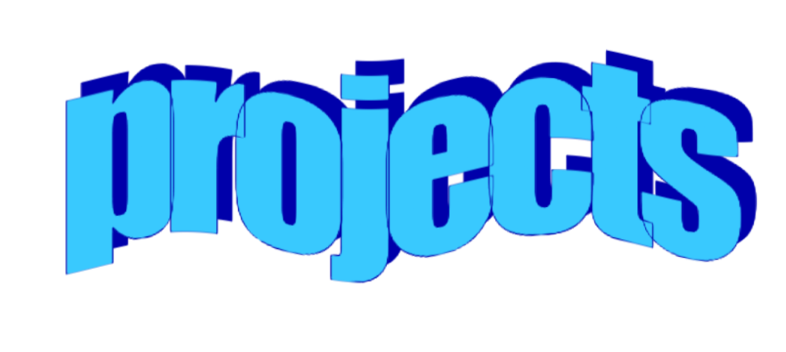
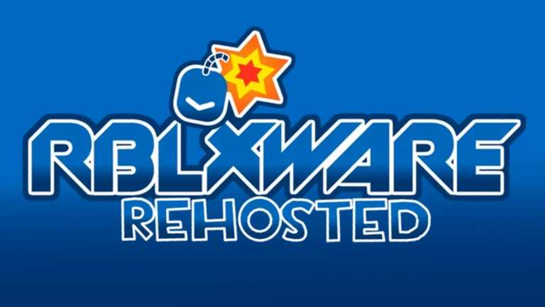

go back!!!
RBLXWARE: Rehosted

Recreation of RBLXWare; game that brings the popular Team Fortress 2 WarioWare Mod "TF2Ware"
To Roblox. This is my and my friends' attempt at remastering and recreating said game. This
project is still unfinished, but we're really close on having some sort of alpha.